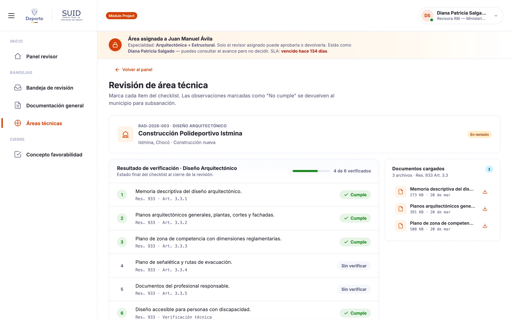
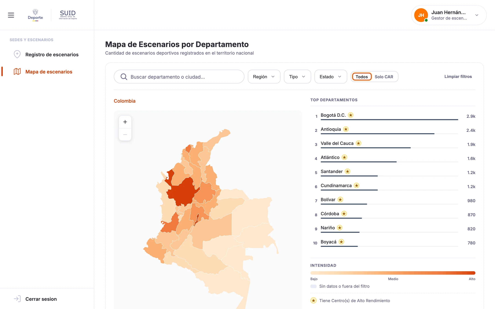
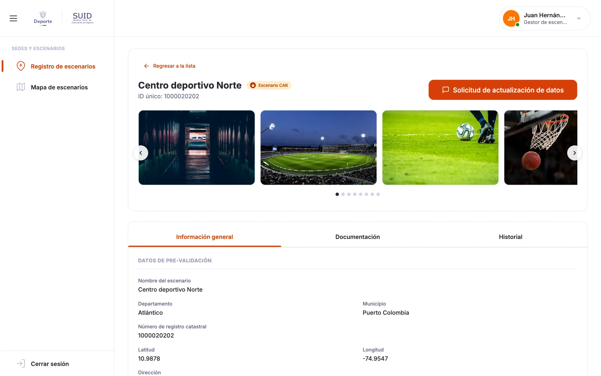
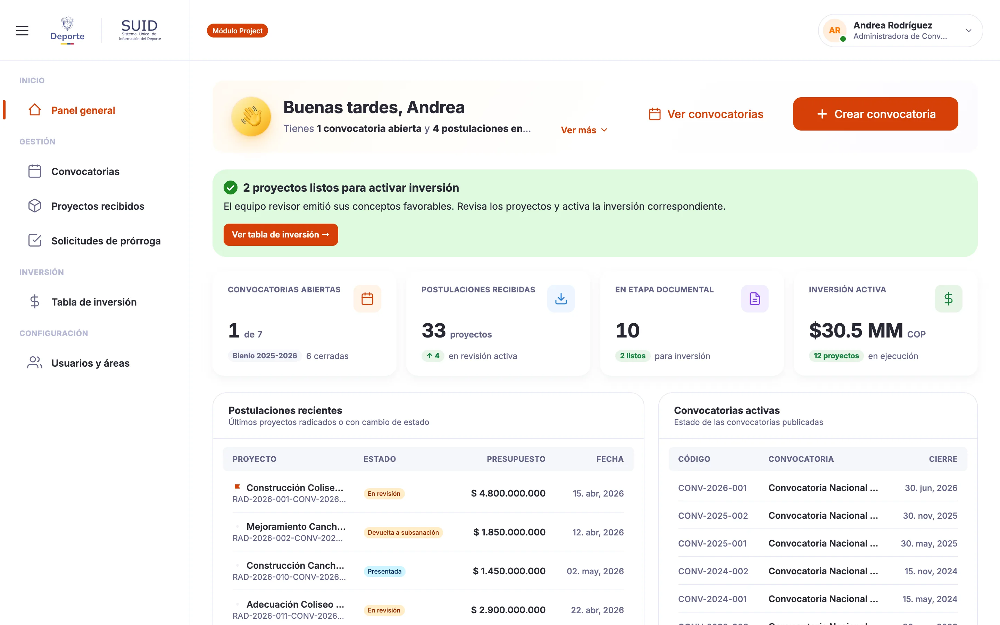

Ahora · Head of Product
Naowee
El deporte de Colombia salió de Word y correo: 30 trámites en una sola plataforma.
- Rol
- Head of Product
- Duración
- Ene 2026 — Hoy
- Equipo
- Producto: 2 personas, con un diseñador que lidero; analistas de negocio e ingeniería.
- Plataformas
- Web

Impacto
- 30trámites digitalizadosantes en Word y correo
- ~1.200organizaciones deportivas en alcance
- 130+pantallas entregadasen 8 de 13 módulos
- 38+componentes compartidosun solo sistema de diseño
Problema
Un sector que funcionaba con archivos
Los 30 trámites del sistema deportivo colombiano se movían por Word, correo y un gestor documental, GESDOC. Ningún sistema hablaba con otro. Dibujar pantallas era la parte fácil: antes había que entender más de 45 estados, 15 roles y una jerarquía real de comités, federaciones, ligas, clubes y deportistas.
Mi parte
Dirijo el producto y construyo el prototipo
- Marco la dirección de 8 módulos de negocio, entre ellos la inspección y vigilancia de ~1.200 organizaciones.
- Construí el sistema de diseño: 38+ componentes, un shell canónico y una sola receta de asistente para 130+ pantallas.
- Modelé la jerarquía del sector con aprobación en cascada: 45+ estados y 15 roles.
- Construyo en código, con Claude Code, Cursor y Gemini, los prototipos que los analistas aprueban historia por historia.
- Con quién: analistas de negocio, un diseñador que lidero y los equipos de ingeniería.
Decisiones
Tres reglas que sostienen la plataforma
-
Un sistema, no ocho dialectos.
- Tensión
- Ocho módulos, ocho fechas, ocho tentaciones de bifurcar.
- Elección
- Nada a la medida; se extienden los 38+ componentes compartidos.
- Por qué
- Lo que se ve distinto en revisión es un error, no una preferencia.

-
La demo es el requisito.
- Tensión
- Cada quien lee distinto una especificación.
- Elección
- Lo que se firma es un prototipo que funciona, con roles y estados reales.
- Por qué
- Los desacuerdos salen cuando todavía son baratos e ingeniería recibe un objetivo resuelto.

-
La jerarquía es el producto.
- Tensión
- Una tabla plana de deportistas habría salido meses antes.
- Elección
- Vínculos reales, con aprobación en cascada del Ministerio al club.
- Por qué
- Un deportista aprobado hereda la liga y la federación de su club, y las medallas por liga solo significan algo si esos vínculos son reales.

Producto
Así se despeja hoy un trámite vencido


Proceso
Del archivo al prototipo firmado
Mapear antes de dibujar
Los 30 trámites se movían por Word, correo y un gestor documental, GESDOC. Antes de dibujar una pantalla mapeé más de 45 estados y 15 roles: los estados eran el producto.
Modelar construyendo
Un deportista aprobado hereda la liga y la federación de su club. Eventos, resultados y rankings entran por plantilla .xlsx en 83 deportes: las filas válidas cargan y las que fallan vuelven con su número de fila.
Firmar el prototipo
Cada módulo empieza como un prototipo clicable con roles y estados reales, revisado historia por historia en un recorrido guiado. El sistema de diseño es el contrato; la demo, la firma.
Herramientas y métodos
- Estrategia de producto
- Sistemas de diseño
- Claude Code
- Cursor
- Gemini
- UI generativa
Enlaces
Autoría
Head of Product en Naowee: marco la dirección de los módulos de negocio y construyo los prototipos que los definen, junto a analistas de negocio, un diseñador que lidero y los equipos de ingeniería.
Siguiente caso
Mercadolibre · 2024–2026
Andes Design System, leer el caso
¿Quieres verlo en detalle? Te lo cuento en una llamada.